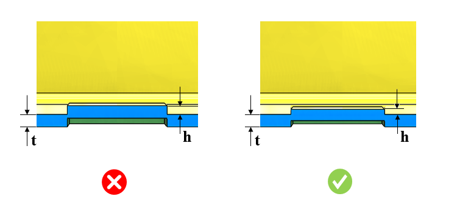

ハーフシャー加工の深さと板厚との比率は、指定された値以下である必要があります。
変形や破断を防ぐために、ハーフシャー加工の深さと板厚との比率が過度に大きくならないようにする必要があります。
一般的な指針として、ハーフシャー加工の深さと板金の板厚との最大比率は 0.6 以下であることが推奨されます。
ルール UI では、材料の一覧が マップ材料 から読み込まれ、ユーザーは材料およびその値を設定することができます。
材料とその値を設定した後、Ctrl+M コマンドを使用して、ルール UI 上で材料グループおよびグレード付きの設定済み材料一覧をフィルタ表示できます。同じキー（Ctrl+M）を使用してフィルタを解除できます。

ここでは、
t = 板厚
h = ハーフシャー加工深さ